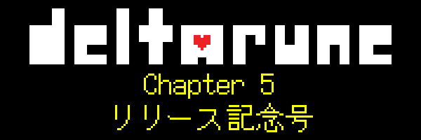
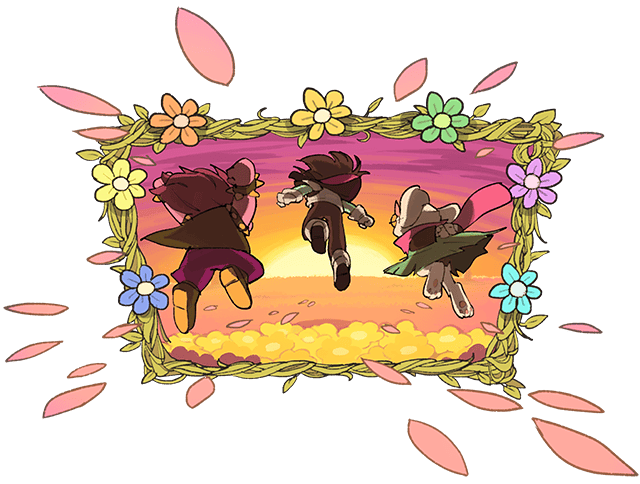
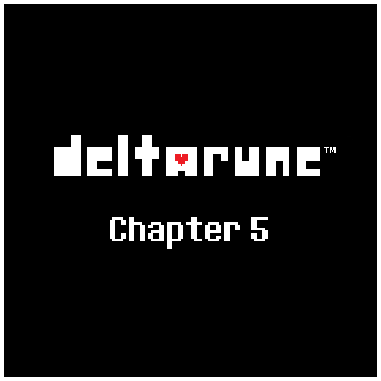

（イラスト by Temmie）
どうも、お待たせ！
『DELTARUNE』Chapter 5のSteam版、Nintendo Switch版、Nintendo Switch 2版、PlayStation 4版、PlayStation 5版が、あと少しでリリースされます！正確なリリース時間については、deltarune.jp をご覧ください。
製品版『DELTARUNE』をすでにご購入済みの方は、自動で更新が入って、新チャプターが追加されます。

「ゲームがクラッシュする」、「進行不能になる」といった不具合に遭遇した場合は、不具合の内容をsupport@deltarune.jpまでご報告ください。今後数週間、確認されている不具合については公式サイトFAQページのトップに掲載していきますので、そちらもご確認ください。

サウンドトラックの曲名は、チャプターをクリアするまで見ないことをおすすめします…
ただし、今回はいろんな方々がゲスト参加してくれているので、クレジットはぜひ見てくださいね！
今回も、辛抱強く待っていてくれて、ありがとうございました！すばらしい開発チームのみんなががんばってくれたおかげで、今回はあまり長くお待たせせずに済みました。そうじゃなかったら、「お待たせしちゃってゴメンゴメン」って言わなきゃいけないところでした…
そんなわけで、僕が10年前に思いついたヘンテコな作品を、どうぞお楽しみください！僕たちは、次のチャプターの開発に進みます！
それじゃ…チャオ！